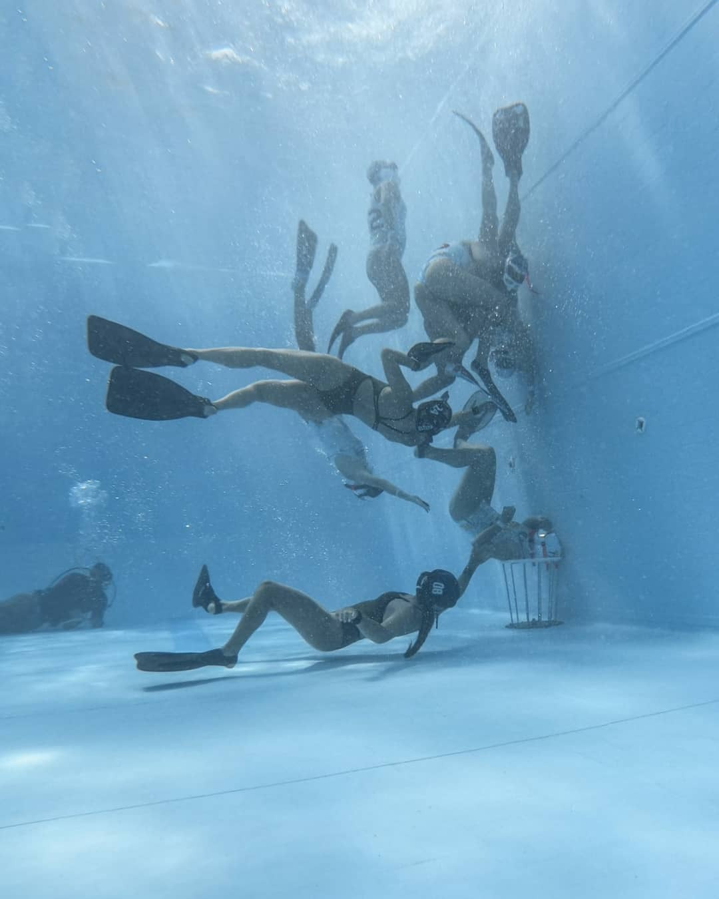

What is underwater rugby
Underwater Rugby is a discipline recognized by the World Confederation of Underwater Activities (CMAS). Underwater rugby is a sport that is played in three dimensions since it takes place in an aquatic environment, typically in pools.
This relatively recent discipline was invented in Germany by a group of diving associations with the aim of conducting physical training. The birth of the discipline is estimated to have occurred in the 1960s, and over the years, it has gained popularity worldwide. Today, it is practiced on an international scale, reaching countries on four of the five continents.
Underwater rugby is a three-dimensional sport that is demanding and requires strong coordination among team members to play effectively. Players can move in any direction—up, down, right, left, and forward or backward. Among many physical attributes, apnea (breath-holding) ability is one of the most crucial in this sport, as players need to hold their breath for short but frequent periods while moving underwater."
 Objective and fieldAlthough underwater rugby shares some similarities with traditional rugby, the gameplay dynamics are quite different. This sport is played breath-hold underwater in a pool with the following dimensions: Length between 12 and 22 m, Width between 8 and 12 m, and Depth between 3.5 and 5 m.
The objective of the game is to introduce the negatively buoyant ball into the opposing team's goal to score goals. These goals are metal baskets with a diameter of 40 cm at the top and are fixed to the pool floor. To achieve this objective, both teams (one wearing dark equipment and the other wearing light equipment) compete in the water. The person in possession of the ball may grab any other player during possession and may be grabbed by any athlete who is in the water.
 Posiciones
Posiciones
In defense, there are three classic positions: Goalkeeper, defender, and midfielder. The person positioned above the goal acts as the goalkeeper. The person positioned below the goal and touching the pool floor is the defender or guard. Lastly, the person without a fixed position is the attacker or midfielder.
In the attack, all players participate, and positions vary freely based on each team's strategy and tactics. Each team consists of six players in the water and 6 players outside, who serve as substitutes. Rotations between those in the water and those on the bench are unlimited. However, there should always be a maximum of 6 players in the water.